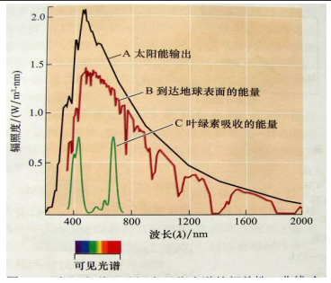

# 植被遥感
# 引子
遥感大数据：通过遥感获取具有空 间属性的大数据，它一方面具有海量、多源、异构、多时相、 多尺度、非平稳等大数据的一般性质，同时具有很强的时空关 联和物理关联。
特点：
- 海量：高分辨率、高动态、波段数量多、光 谱和空间分辨率高、数据速率快、周期短。
- 多源：数据来源和获取手段多样。成像 机理和模型差异巨大。
- 多时相：采样间隔缩短，数据获取频率 幅度增大。
- 高价值：地理和物理关联的海量数据集成， 揭示地球系统要素的相互作用与耦合关联。
# 植被特性与光谱特征
# 植被与植物
Q1：植被（vegetation）与植物（plant）的区别？什么叫植被？
植被：某一区域内全部植物群落的总体。组成植被的单 元是植物群落，某一地区植被可以由单一群落或几个群落组成。
plants in general, especially the plants that are found in a particular area or environment
植物群落：在环境相对均一的地段内，有规律地 共同生活在一起的各种植物种类的组合。
例如一片森林、一个生有水 草或藻类的水塘等。
植被遥感：利用电磁波方法来探测植被组成、生理 生态的状态、过程及各类生产、生态与服务价值。
Q2：叶子为什么是绿色的？
在0.55μm 附近有一个反射峰，该峰的形成是由于叶子内部叶绿素a、b以0.45μm与0.64-0.68μm 为中心有两个强烈的吸收带，以及胡罗卜素、叶黄素在0.43μm-0.48μm范围内有强烈的吸收带所致。该峰的存在正好说明了叶子为什么呈绿色， 在这一波段范围内，植被的波谱特征基本上被叶绿素，胡罗卜素所控制，前者占总吸收量的65%-75%，后者占总吸收量 的25%-35%，叶绿素(a+b)的总浓度约0.024mg/cm2 的等级 范围内，而胡罗卜素浓度约在0.068mg/cm2 的范围内。
Q3：花儿为什么那么红？
Q4：什么波长的光对叶片内部结构更有探测优势？